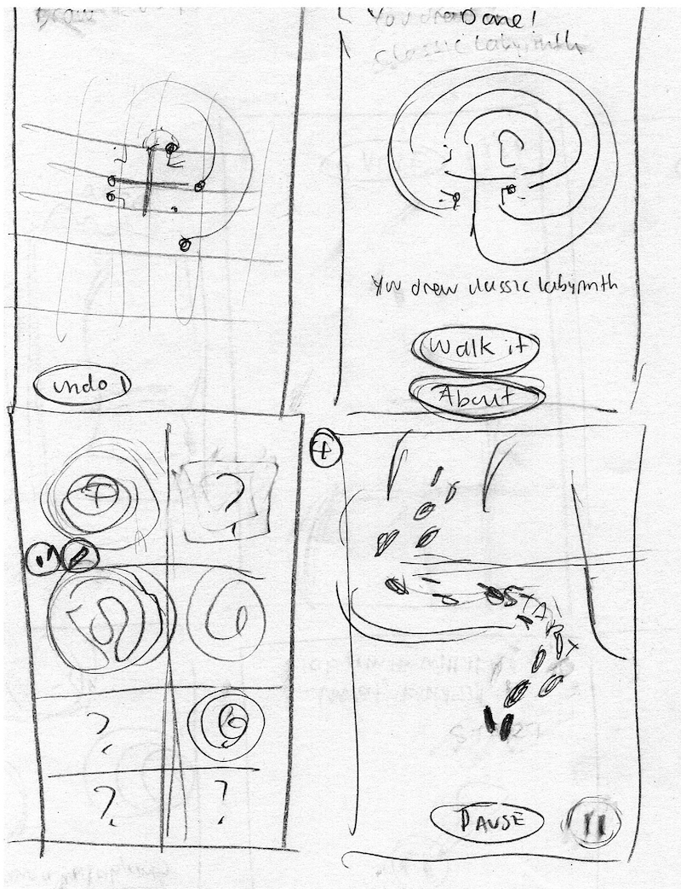
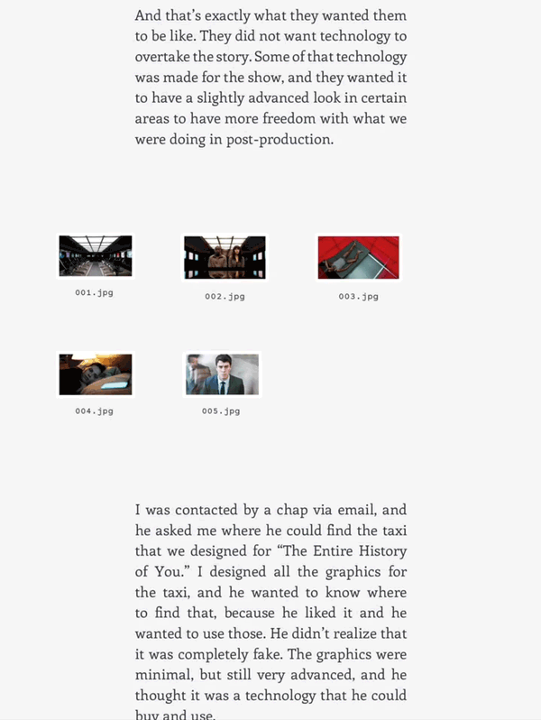

UX & UI
Museum Mobile App
Visitors, especially kids, are encouraged to draw and walk labyrinths featured in the exhibition with this lightweight game concept. Each day you get to unlock a new labyrinth. This could be a great way for the Museum to keep their audience engaged after leaving the exhibition.


Benefits Enrollment Software
At Winston Benefits, I worked with a team of insurance specialists and engineers to improve the UI of their web portal. Employees go there to enroll in their benefits every year. Since the insurance world is dense with jargon and numbers, my focus was creating simplified workflows to guide them in this process.
Features I worked on:
- Plan Cards Summary under My Benefits tab
- Visual HSA/FSA calculators to guide decisions during enrollment
- Alerts, navigation styling, and dashboard tiles
User Feedback
Interviews and an activity I led with company’s client account staff. My goal was to understand users’ process and turn insights into actionable ideas. I created these slides and presented findings to senior management.
XOVER Digital Magazine
XOVER is my concept for a digital magazine for the iPad featuring 'crossover' topics in entertainment, new media, and technology. Its reader base is a balance between pop culture enthusiasts and industry experts.

To keep XOVER human-centered and accessible, I approached it with a minimalist design that puts content and usability first. The colors and soft shapes here were inspired by early 1900s product design.